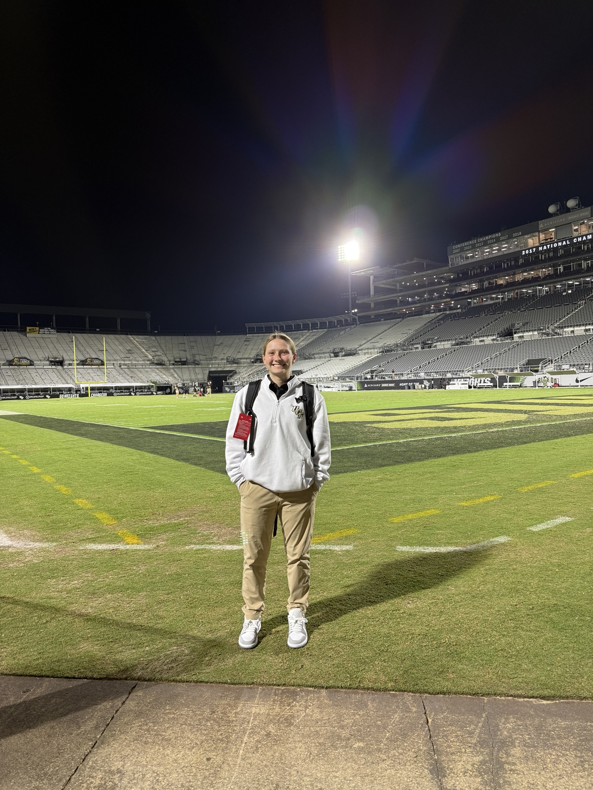

UCF ATHLETICS
Strategic Communications Intern
SPORTS COMMUNICATIONS PORTFOLIO 2026 —
SPORTS COMMUNICATIONS & MEDIA
Telling the stories behind the game. From the press box to the final whistle.
EXPLORE SELECTED WORK
01 / ABOUT ME
A passion for sports. A focus on the story.
Aspiring sports communications professional with experience across the NFL, NBA, MLS, NWSL and NCAA. Skilled in sports storytelling, media relations, content creation and game-day operations at the professional and collegiate levels.
Develops compelling game recaps, press releases and media materials while supporting communications efforts across multiple sports. Studying Business and Professional Communication at the University of Central Florida with a minor in Sport Business Management; expected graduation May 2028.
02 / EXPERIENCE
Professional and collegiate sports.
Communications, media and operations.
Strategic Communications Intern
Game Day Communications Assistant
Match Day Communications Associate
Team Attendant · Basketball Operations
Experience includes game-day media coordination, credentialing, press conferences, postgame transcripts, written coverage, statistical materials and basketball operations.
03 / PORTFOLIO
Published stories, media materials and
game-day communications projects.
GAME RECAP · NOV 20, 2026
Independently written · Published article
GAME RECAP · NOV 11, 2026
Independently written · Published article
GAME RECAP · NOV 3, 2026
Independently written · Published article
TOURNAMENT PREVIEW · OCT 10, 2026
Independently written · Published article
STATISTICS SHEET · OCT 2026
Independently produced · Media materials
MATCH RECAP · NOV 13, 2026
Independently written · Published article
POSTGAME QUOTE SHEET · NOV 1, 2026
Independently transcribed and prepared
POSTGAME QUOTE SHEET · OCT 4, 2026
Independently transcribed and prepared
POSTGAME QUOTE SHEET · SEP 20, 2026
Independently transcribed and prepared
MATCH REPORT · COLLABORATIVE
Contributed as part of the Orlando City Communications team
All work is presented with its original publication or document. Collaborative contributions are identified.
04 / LEADERSHIP
MAY 2026 — PRESENT
Leads a seven-member executive board and coordinates club meetings, guest speakers, site visits and programming that connects students with the sports industry.
05 / GET IN TOUCH
Interested in connecting about sports communications, storytelling or media opportunities? I'd love to hear from you.
TIFFANYPCHINCH@GMAIL.COM ↗